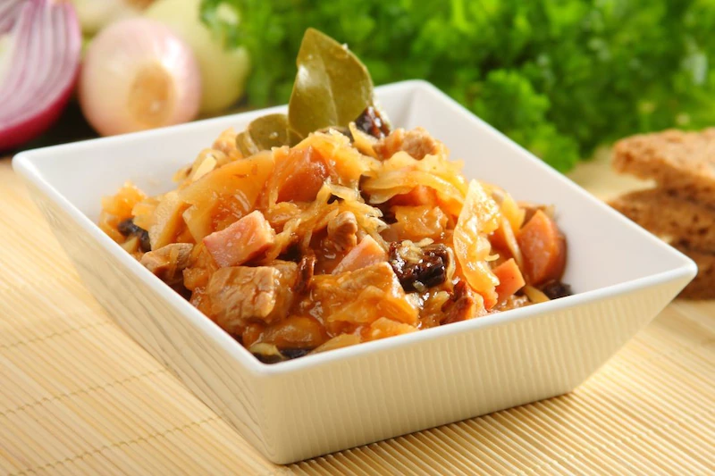

Author: Przepisy.pl
Cook the smoked bacon in water with bay leaf and allspice, then cut it into cubes.
Add shredded sauerkraut and white cabbage to the bacon stock. Add Knorr cubes and cook for about 30 minutes.
Cut the pork neck and onion into cubes and fry in a pan.
Add previously soaked diced mushrooms and puree. Simmer covered for a few minutes.
When the meat is tender, put it in the cabbage and add the bacon, diced sausage and soaked prunes. Season with marjoram and crushed garlic. Mix thoroughly. Simmer slowly for another 30 minutes.
Make a roux of lard and flour, add to bigos. Cook until soft over low heat, stirring occasionally.